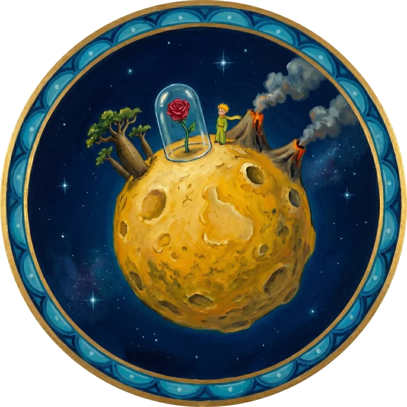
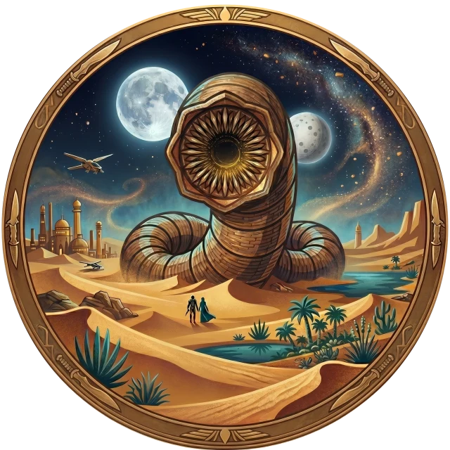
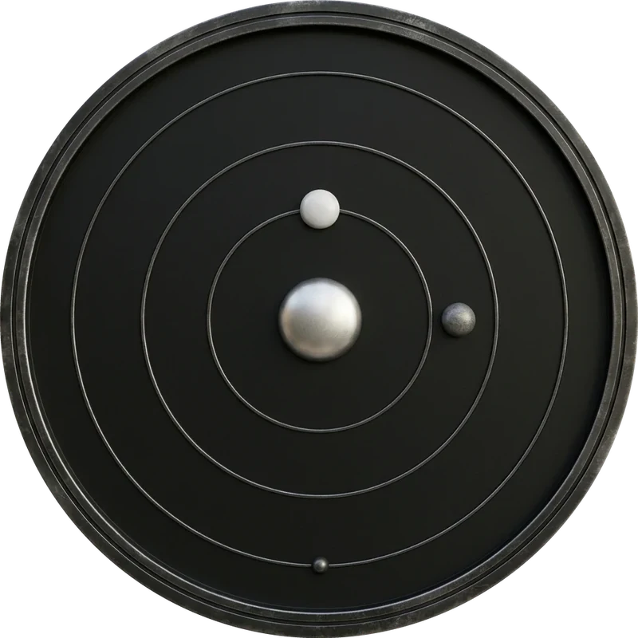

Eight worlds, one line at a time
“We’re all mad here.”
“So we beat on, boats against the current.”

“What is essential is invisible to the eye.”
“Try to love the questions themselves.”
“Big Brother is watching you.”
“What stands in the way becomes the way.”

“I must not fear. Fear is the mind-killer.”

“Desire is a contract you make with yourself to be unhappy.”